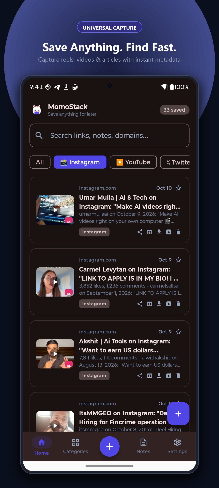
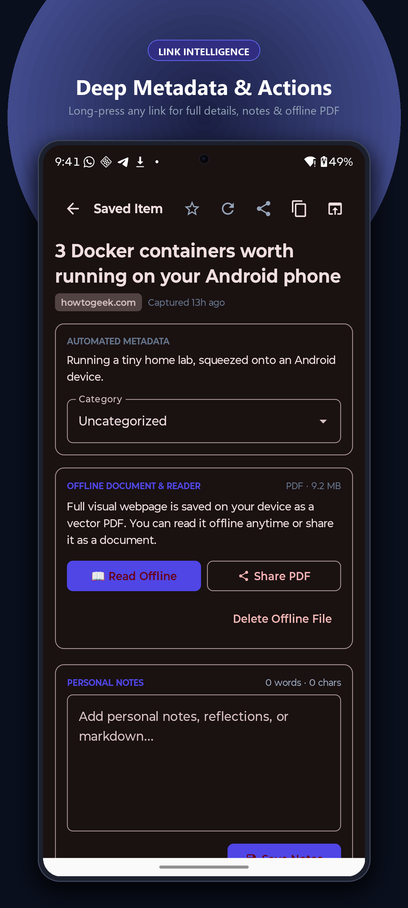
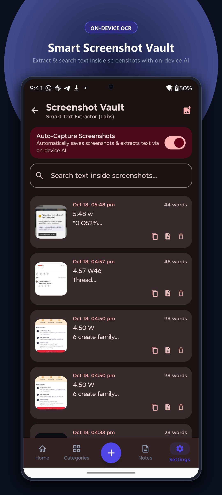
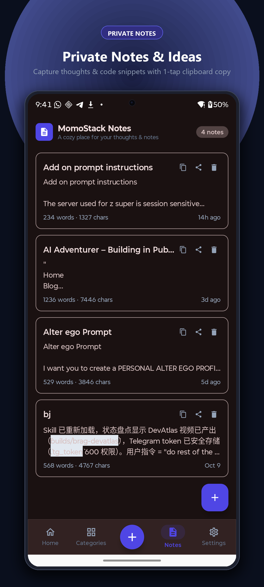
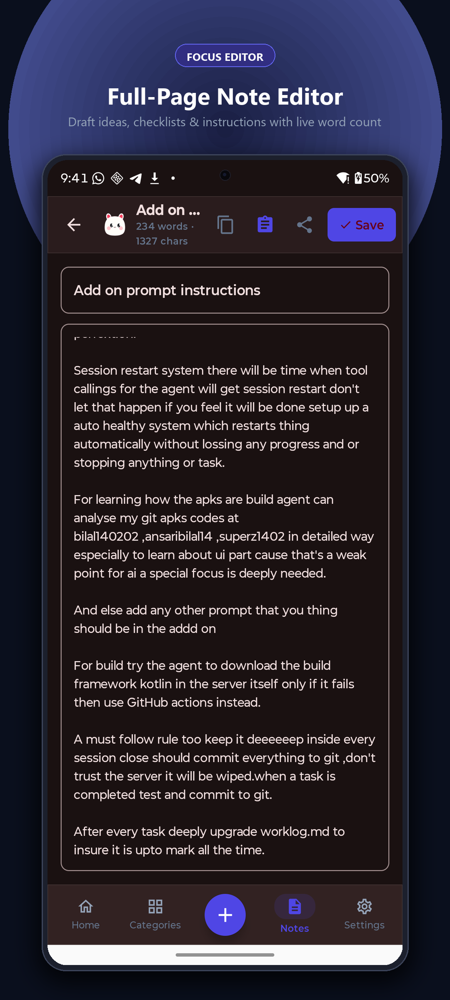
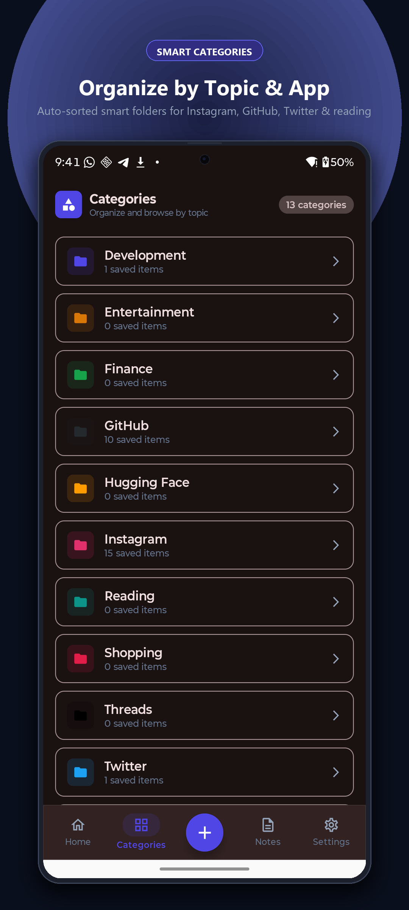

Six Pillars of Offline Sovereignty.
Every module is optimized for zero-latency execution, on-device machine intelligence, and persistent local storage without vendor lock-in.
Universal Link Ingestion & Intelligent Reels Feed
Tap Share from any Android app—Chrome, Twitter/X, YouTube, Reddit, Instagram, or Substack—and send the URL straight to MomoStack.
-
Tracker Sanitizer: Strips invasive UTM parameters,
fbclid, and affiliate hashes automatically before persisting. - Sub-100ms OpenGraph Parser: Extracts high-resolution preview graphics, article headlines, domain favicons, and word counts.
- Full Offline Cache: Read metadata and access links even during airline flights or subway dead zones.

Long-Press Link Intelligence & Offline PDF Archival
Web pages vanish, paywalls rise, and domains expire. MomoStack gives you total permanence with deep contextual link operations.
- One-Touch Offline PDF Snapshot: Renders articles via headless WebKit directly into a searchable offline PDF document.
- Deep Action Sheet: Fast copy, share stripped URL, reassign category folder, or delete in 1 tap.

On-Device OCR & Screenshot Intelligence Vault
Never let important screenshots get buried under thousands of camera photos. MomoStack isolates screenshots into a dedicated intelligence vault.
- 100% Local ML Kit Recognition: Transcribes receipts, tracking codes, terminal commands, and tweets right on your device silicon.
- Instant Text Extraction: Tap any transcribed line to copy code or passwords directly to clipboard.

Zero-Latency Notes & Full-Page Markdown Editor
Notes shouldn't wait for spinning sync spinners. MomoStack delivers immediate keystroke response, 1-tap copy, and full markdown clarity.
- 1-Tap Card Copy: Grab entire notes or snippet blocks from the list view without having to open the editor.
- Full-Screen Distraction-Free Writing: Clean dark canvas with auto-saving on every character insertion.


Smart 13 Categories Vault Organization
Say goodbye to endless unorganized bookmarks. MomoStack features 13 dedicated topic vaults crafted specifically for developers, researchers, and creators.
